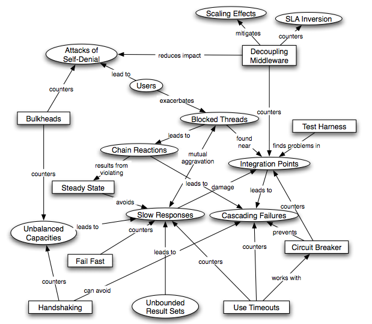

We Need More of These
Michael Nygard's Release It! is one of my favorite books about the practical side of computing–I gave it five stars when it first came out, and while it's too advanced for most of the scientists we want to teach, there's something from it that I'd like to share: the diagram titled "Interaction of Patterns and Antipatterns" from page 43:

This is the best concept map I've ever seen. The ovals are problems, the rectangles are solutions, and the arcs explain clearly and succinctly how the latter address the former. I tried several times in 2010 to build something like this for Software Carpentry, but always bogged down: I'm not a visual thinker (my brothers and sister got those genes), and I was trying to do too much at once. If anyone out there would like to take a run at doing something like this for small portions of our course material, please get in touch.